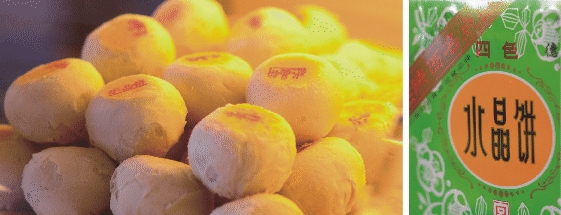
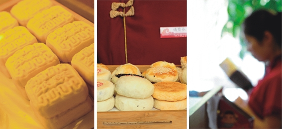

将果脯切成均匀的小块，芝麻洗净用文火炒至产生香味，各种果仁(桃仁、瓜仁等)均须经过烘烤，以使口味纯正。糖浆要经过蛋液提纯，浆口老嫩要适度。
先调酥，后调浆皮。调浆皮时先把化好的凉浆倒入搅拌机内，同时倒入油，搅至油不上浮，浆不沉底，充分乳化时，缓缓倒入特制粉，搅拌成油润细腻具有一定韧性的面团即可。
先把酥和浆皮按照1∶2.5的比例包好，擀成片状，切成八条，卷起备用。按每千克10块，皮、馅1∶1的比例包成球型饼坯，封口要严。
刻模时要按平、严防凹心，偏头、飞边；出模时要求图案清晰，形态丰满，码盘时轻拿轻放，留有适当间距，产品表面蛋液涂刷均匀，适量。
用转炉烘烤，炉温180～190℃，最高不超过200℃，时间为12分钟左右，产品火色均匀，表面棕黄，墙乳白色，并有小裂纹，底部檫红色即可出炉。